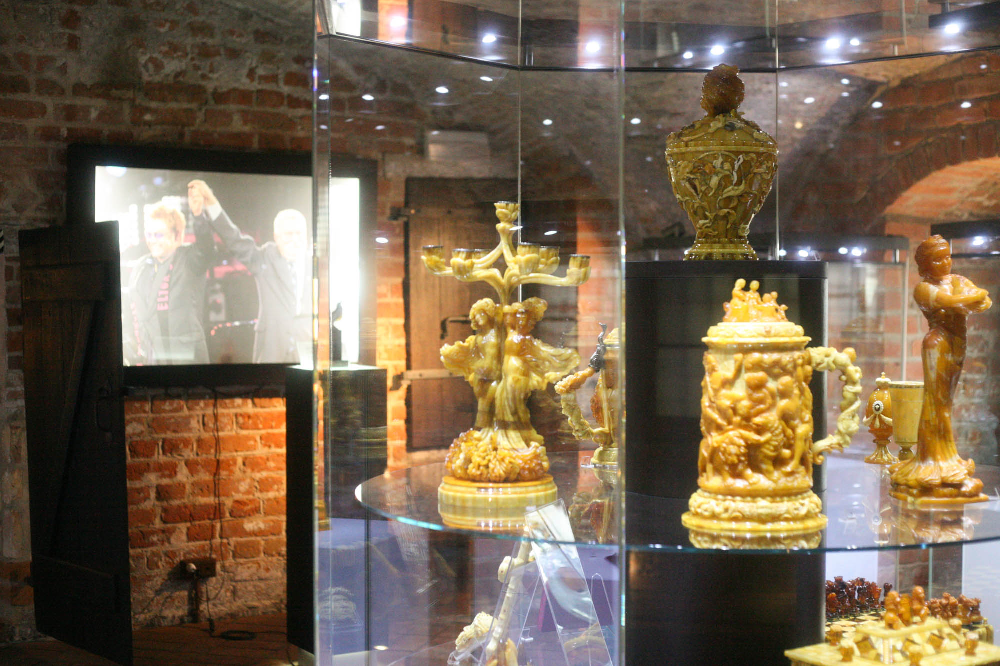
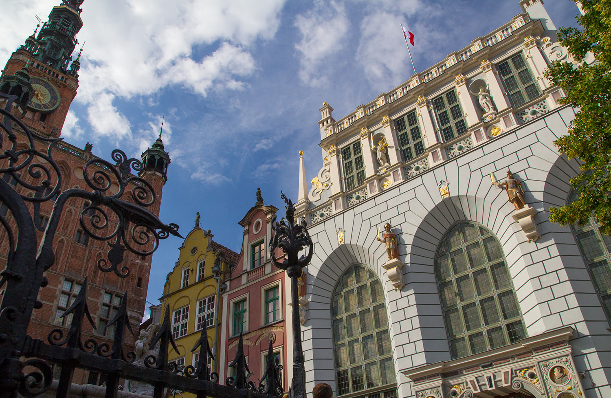
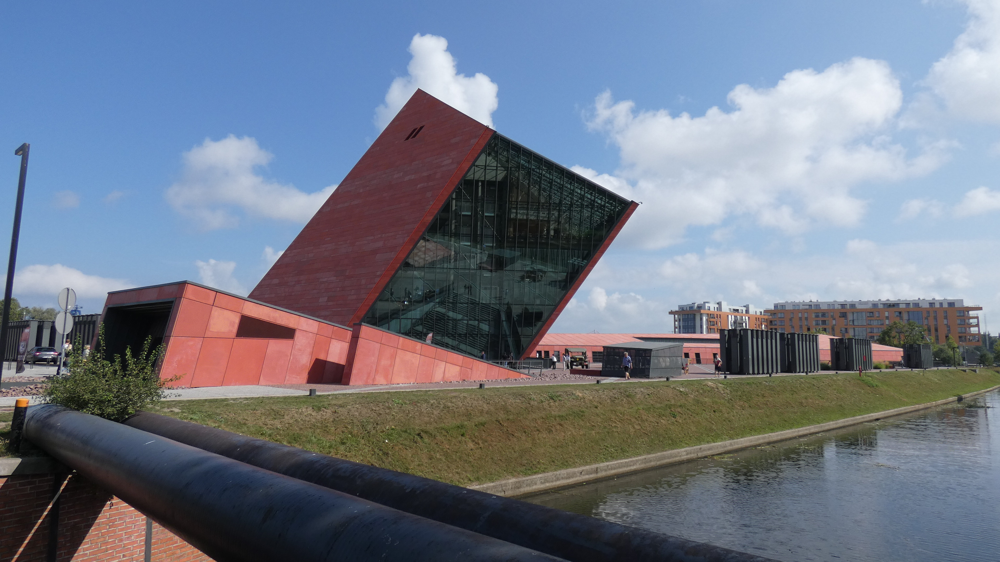

Jako "Światowa Stolica Bursztynu" Gdańsk może pochwalić się największymi na świecie targami bursztynu. Aby poznać historię tego pięknego materiału koniecznie należy udać się do Muzeum Bursztynu - Obiektu usytuowanego na Targu Węglowym. Prezentuje on historię powstania bursztynu, jego właściwości, pozyskiwanie oraz obróbkę na przestrzeni dziejów - od czasów najdawniejszych do współczesności.
Jest to najbardziej rozpoznawalny posąg w Gdańsku, oraz jedna z wizytówek tego miasta. Fontanna została umiejscowiona w 1633 roku w reprezentatywnej części miasta z inicjatywy burmistrza Bartłomieja Schachmanna oraz rady miejskiej.

Ten największy i najstarszy z zachowanych dźwigów portowych średniowiecznej Europy zbudowano w latach 1442-1444. Spełniał on dwie funkcje – służył do stawiania masztów i przeładunku towarów, a jednocześnie był bramą miejską. Wizyta w Żurawiu to świetna okazja, aby poczuć atmosferę dawnych portów. Klimatyczny środek, zrekonstruowany i czynny mechanizm napędowy, sporo informacji na temat historii Żurawia, Gdańska oraz handlu w tym mieście, do tego wszystkiego ciekawa panorama na Motławę.

Klimatycznych miejsc w Gdańsku jest bardzo dużo i za taką można uznać ulicę Mariacką, prowadzącą od położonej nad Motławą Bramy Mariackiej do kościoła Mariackiego. Początków jej istnienia można doszukiwać się już w I poł. XIV wieku, a tym, co ją wyróżnia, są zachowane przedproża. Bogata dekoracja rzeźbiarska i snycerska, wąskie brukowane przejścia pomiędzy szeregiem domów – tak kiedyś wyglądał Gdańsk.

Ratusz Głównego Miasta jest jednym z bardziej charakterystycznych budynków Gdańska. Najstarsze fragmenty ratusza pochodzą aż z XIV wieku. W następnych okresach był on jednak wielokrotnie rozbudowywany, a efektem jest piękna gotycko-renesansowa budowla. Większość osób uwiecznia budynek na fotografiach, a niewielu zagląda do przepięknego środka, przez co jest to jeden z bardziej niedocenianych zabytków w Gdańsku. Niegdysiejsza siedziba władz miejskich mieści Muzeum Gdańska, a galeria na wieży stanowi doskonały punkt widokowy.
To powstałe w 2008 roku muzeum jest niesamowitym miejscem opowiadającym o tragicznym doświadczeniu II wojny światowej, o jej genezie i skutkach, o sprawcach oraz ofiarach, o bohaterach i zwykłych ludziach. Sercem Muzeum jest wystawa główna, zajmująca powierzchnię niemal 5 tys. m2, co czyni ją jedną z największych wystaw prezentowanych przez muzea historyczne na świecie. Zlokalizowana jest 14 metrów pod ziemią. Wystawę tą tworzą trzy bloki narracyjne: „Droga do wojny”, „Groza wojny” oraz „Długi cień wojny”. Ekspozycja przedstawia polskie doświadczenie wojny, wpisane w szerszy kontekst europejski i światowy. Została podzielona na 18 sekcji tematycznych.
